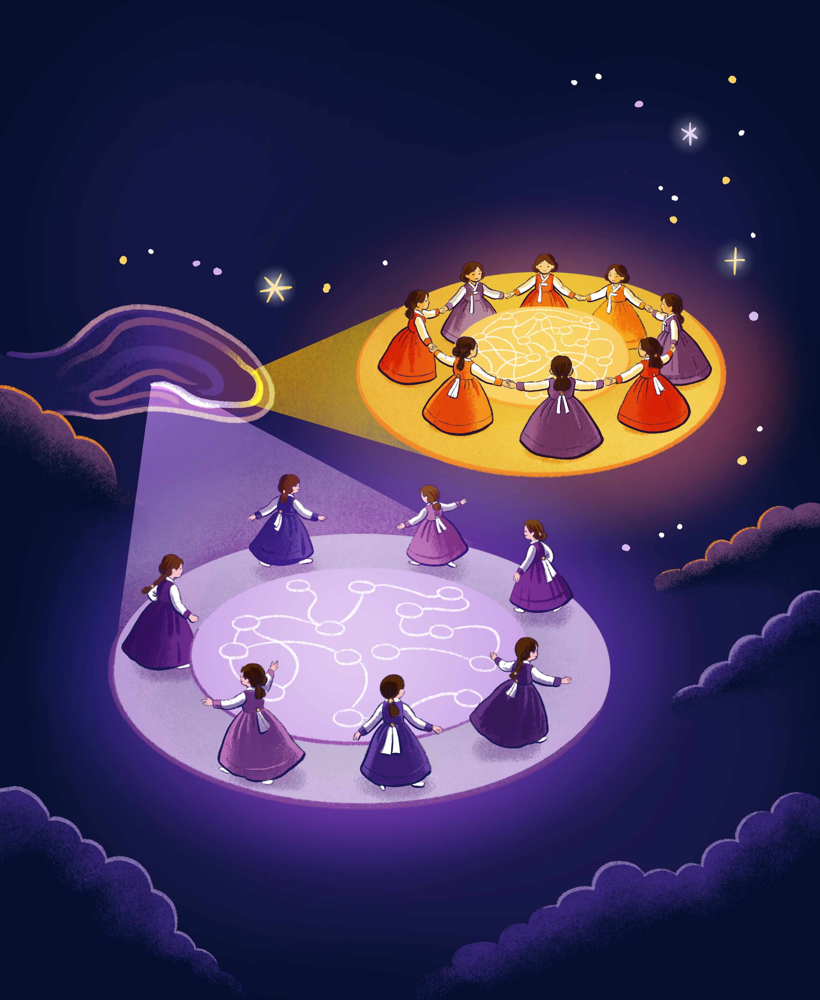
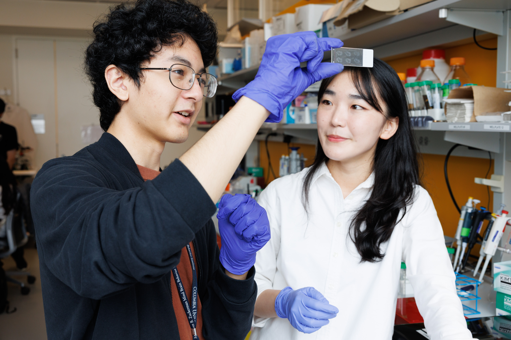
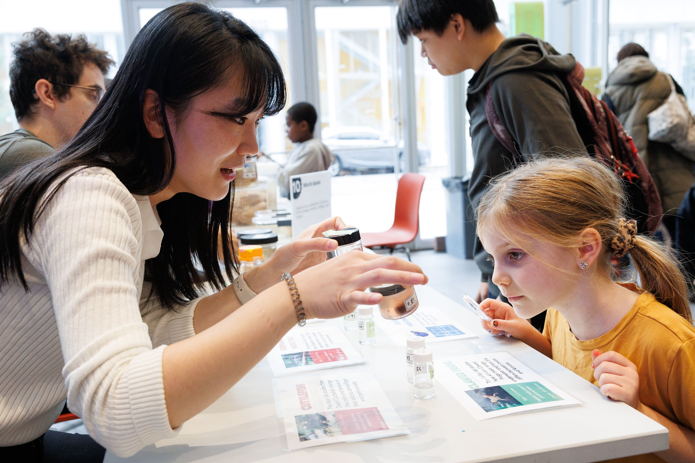

I am a Postdoctoral Research Scientist at the Mortimer B. Zuckerman Mind Brain Behavior Institute at Columbia University, working with Dr. Attila Losonczy and Dr. Stefano Fusi.
My research combines cutting-edge bioimaging technologies with neural circuit analysis to understand how the hippocampus encodes social identity, spatial memory, and reward expectation. I develop intravital deep-tissue imaging systems and leverage two-photon microscopy, connectomics, and computational approaches to uncover the principles governing neural representations in hippocampal subregions.
I earned my Ph.D. in Medical Science and Engineering from Korea Advanced Institute of Science and Technology (KAIST), where I was advised by Dr. Pilhan Kim and developed intravital deep tissue imaging systems for investigating hippocampal mechanisms. Before joining Columbia, I was a Postdoctoral Research Scientist at the Institute for Basic Science (IBS) in South Korea, working with Dr. Doyun Lee.
My publications are listed below. Feel free to reach out at ek3324@columbia.edu.
Research
Hippocampal Circuit Organization and Spatial Memory: My current work investigates how recurrent connectivity shapes spatial coding across the proximodistal axis of hippocampal CA3. Using large-scale two-photon calcium imaging combined with connectome-level analysis, I study how the architecture of neural circuits determines the stability and dynamics of spatial memory representations, and how recurrency levels drive representational drift.
Social Memory and Neural Representations: During my time at IBS, I discovered that dorsal CA1 hippocampal neurons encode dynamic and stable representations of social identity and reward expectancy, revealing how the hippocampus supports associative social memory. This work, published in Nature Communications, demonstrated "who"-specific neural coding in the hippocampus.
Intravital Deep-Tissue Imaging: My doctoral work focused on developing novel intravital imaging technologies—including side-view confocal endomicroscopy and two-photon systems—for cellular-level visualization of deep brain tissue in live animals. These tools have been applied across neuroscience, cancer biology, and kidney and liver disease research.
Awards & Honors
- 2026–2031|K99/R00 Pathway to Independence Award (1K99NS148806-01), NIH/NINDS
- Mar 2026|Presenters Travel Grant for Cosyne 2026, Wu Tsai Neurosciences Institute - Stanford University
- 2024–2025|Overseas Postdoctoral Fellowship, Korea National Research Foundation
- Sep 2022|Future of Science Fund Scholarship, Keystone Symposia - Neurocircuitry of Social Behavior
- May 2022|Best Presentation Award, Korea Society of Brain and Neural Science Annual Meeting
- Feb 2019|Travel Grant Award, Max Planck Florida Institute for Neuroscience - Neuroimaging Course
- Nov 2016|Young Investigator Best Research Award, Annual Biophotonics Conference
- Oct 2016|Best Paper Award, International Biomedical Engineering Conference
- Aug 2016|Encouragement Award, KAIST Undergraduate Research Program Workshop
Publications

Kong et al. demonstrate that gradients in recurrent connectivity along the transverse axis of hippocampal CA3 organize complementary spatial coding strategies by combining in vivo two-photon functional imaging, genetic perturbation, and computational modeling. Inspired by Ganggangsullae, a traditional Korean circle dance in which coordinated interactions among individuals give rise to collective harmony, the artwork depicts two ensembles with distinct patterns of connection and choreography, symbolizing how local circuit architecture shapes neural representations to balance stable and flexible memory computations. Artist credit: Matteo Farinella.
Patents
- Rep. of Korea Patent 10-2186327 — Apparatus and Methods for In Vivo Wide-area Cellular-level Imaging of Biological Deep Tissue. Kim P (representative inventor), Kong E, Ahn J (Nov. 2020)
- PCT/KR2019/013128 — System for In Vivo Microscopic Imaging of Deep Tissue, and Microscopic Imaging Method. Kim P (representative inventor), Kong E, Ahn J (Oct. 2019)
- KR-10-2016-0070908 — System for Tuberculosis Diagnosis. Kim Y (representative inventor), Kong E, Hyun J, Lee J, Jeon S, Kim H (June 2016)
Teaching & Outreach
- 2024–present Co-organizer, Columbia Hippocampus Club Co-organizes a monthly seminar series focused on understanding hippocampal evolution and function across through studies of disease, anatomy, activity, and computation.
- 2024–2025 Teaching Assistant, BIOL UN3500 I have provided 12 hours per week of teaching and mentoring for an undergraduate student conducting independent research in the laboratory of Dr. Attila Losonczy.
- Summer 2025 Mentoring, SURF 2025 Mentored a SURF undergraduate student in the Losonczylab, investigating the effects of aging on the dynamics of place field formation by performing in vivo two-photon calcium imaging in the hippocampus of freely moving animals.
-
Summer 2024
Mentor, BRAINYAC Program
Mentored a high school student in immunohistochemistry, tissue imaging, and image processing with Python. The mentee was awarded the Merit Fellowship for outstanding performance.Photo Credit: Sirin Samman

-
2023–present
Volunteer, Saturday Science
Designed and coordinated the "Where am I" activity section, integrating a virtual-reality spatial navigation system in the Losonczylab to educate the local community about how place cells in the brain work, receiving high evaluations for engagement and effectiveness.

Photo Credit: Sirin Samman
- 2023–present Committee Member, Art in the Ed Lab I participated as an artist selection committee member and discussed my research projects with selected artists to inspire the creation of neuroscience-related artwork.